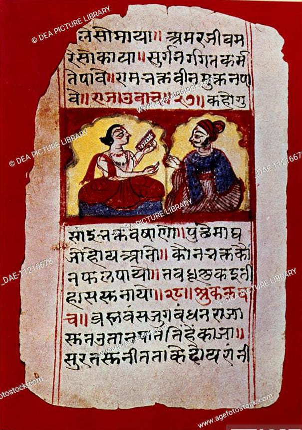

- ऋग्वेद हा चार वेदांपैकी एक असून त्याची रचना चार वेदांमध्ये सर्वप्रथम झाली आहे असे समजण्यात
येते.
- (उरलेले तीन वेद - यजुर्वेद, सामवेद आणि अथर्ववेद.) ऋग्वेद हा प्राचीन भारतीय वैदिक संस्कृतीतील
सर्वात जुना आणि पवित्र
समजला जाणारा ग्रंथ आहे.
- हा वेद ब्रह्मदेवाने लिहिला आहे, अशी समजूत आहे.
- ब्रह्मदेव निद्रेत असताना त्यांच्या तोंडातून तीन वेद निघाले.त्यापैकी एक म्हणजे ऋग्वेद.
- ऋग्वेद संस्कृत वाङ्मयातील पहिला ग्रंथ आहे.
- ऋग्वेदामध्ये एकूण १० मंडले, १०२८ सूक्ते,१०.४६२ ऋचा आणि १०५८९ मंत्र आहेत.
- निसर्गातील विविध शक्तींना देवता मानले आहे. त्यांची स्तुती गाणारी कवने ऋग्वेदात आहे.
- ऋग्वेदातील प्रत्येक कडव्यास 'ऋचा' म्हणतात. ऋग्वेद रचनेचा काल इ.स.पू. ६००० पूर्वीच्या सुमाराचा
असावा असा अंदाज आहे.
- ऋग्वेदाच्या मांडणीची व्यवस्था महर्षी व्यास यांनी पाहिली.
- ऋग्वेदातीला सूक्तांचे कर्ते ब्राह्मण, क्षत्रिय व वैश्य या तीनही वर्णांचे लोक आहेत.
- ऋग्वेदामध्ये पाठभेद नाहीत. 'अग्निमीळे पुरोहितम्' हा ऋग्वेदातील पहिला मंत्र असून अग्निसूक्ताने
ऋग्वेदाचा प्रारंभ होतो.
- पाणिनीच्या काळात ऋग्वेदाचा अर्थ समजण्यासाठी पदे, क्रम इत्यादी व्यवस्था निर्माण झाली.
- ती पदे न फिरवता तशीच म्हंटली जावीत या साठी जटापाठ आणि घनपाठ म्हणण्याची पद्धत सु्रू झाली.
- ऋग्वेद हा स्तुतिपर असून पद्यमय आहे.
- ऋग्वेदाच्या १०व्या मंडलातल्या पुरुषसूक्तात तीनही वेदांचा उल्लेख आहे.
- श्रीसूक्त हे देवीच्या वर्णनपर असलेले प्रसिद्ध सूक्त ऋग्वेदाच्या दहाव्या मंडलात आहे.
- पुरुष सूक्त मध्ये विराट पुरुषाची संकल्पना मांडलेली आहे या विराट पुरुषाच्या विविध अवयवांपासून
ब्राह्मण क्षत्रिय वैश्य आणि
शूद्र या वर्णांची निर्मिती झाली असे वर्णन केलेले आहे.
